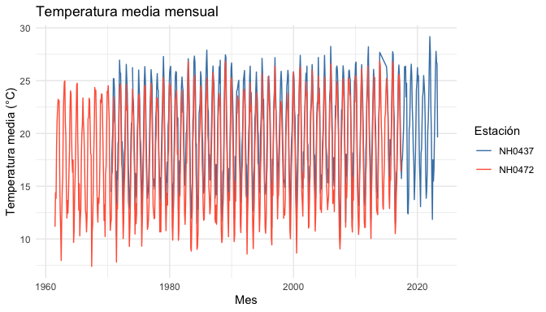

Porque a veces el clima te hace llorar… y los datos meteorológicos también. 😭
lloRando es un paquete de R que te lleva de un CSV del INTA a un gráfico del clima en pocas líneas: leé, resumí y graficá datos diarios de estaciones meteorológicas sin sufrir en el intento.
⚠️ Proyecto de práctica para Introducción a la Programación II. Es un paquete de prueba y no está pensado para un uso real.
⚡ En 30 segundos
library(lloRando)
tabla_resumen_temperatura(estaciones)
grafico_temperatura_mensual(estaciones)🛠️ Instalación
install.packages("remotes")
remotes::install_github("maipochettino/lloRando")🧰 ¿Qué incluye?
| Función | Para qué sirve |
|---|---|
descargar_estacion() |
Descarga (o lee, si ya existe) los datos de una estación |
tabla_resumen_temperatura() |
Promedio y desvío de la temperatura por estación |
grafico_temperatura_mensual() |
Temperatura media mensual de cada estación |
estaciones |
Dataset con 5 estaciones listo para usar |
🗂️ Datos incluidos
El dataset estaciones reúne observaciones diarias de cinco estaciones del INTA: NH0472, NH0910, NH0046, NH0098 y NH0437.
library(lloRando)
dim(estaciones)
#> [1] 95681 35
unique(estaciones$id)
#> [1] "NH0046" "NH0098" "NH0437" "NH0472" "NH0910"
head(estaciones[c("id", "fecha", "temperatura_abrigo_150cm")])
#> id fecha temperatura_abrigo_150cm
#> 1 NH0046 1973-01-01 27.00
#> 2 NH0046 1973-01-02 27.20
#> 3 NH0046 1973-01-03 25.15
#> 4 NH0046 1973-01-04 26.45
#> 5 NH0046 1973-01-05 26.05
#> 6 NH0046 1973-01-06 20.45-
id: identifica la estación. -
fecha: día de la observación. -
temperatura_abrigo_150cm: temperatura en °C a 150 cm del suelo.
Los datos originales vienen del repositorio del curso.
📥 Descargar datos de una estación
descargar_estacion() recibe el id de la estación y la ruta donde guardar el CSV. Si el archivo ya existe, lo lee directamente; si no, lo descarga primero. Necesita Internet, así que este ejemplo no se ejecuta al construir el README:
datos <- descargar_estacion(id = "NH0437", ruta = "datos/NH0437.csv")
head(datos)🌡️ Resumir la temperatura
tabla_resumen_temperatura(estaciones)
#> # A tibble: 10 × 3
#> id estadistico valor
#> <chr> <chr> <dbl>
#> 1 NH0046 media 17.3
#> 2 NH0046 desvio 5.90
#> 3 NH0098 media 18.6
#> 4 NH0098 desvio 5.98
#> 5 NH0437 media 20.2
#> 6 NH0437 desvio 5.77
#> 7 NH0472 media 18.0
#> 8 NH0472 desvio 5.94
#> 9 NH0910 media 17.7
#> 10 NH0910 desvio 6.12¿Querés solo algunas estaciones? Filtralas antes:
seleccion <- estaciones[estaciones$id %in% c("NH0437", "NH0472"), ]
tabla_resumen_temperatura(seleccion)
#> # A tibble: 4 × 3
#> id estadistico valor
#> <chr> <chr> <dbl>
#> 1 NH0437 media 20.2
#> 2 NH0437 desvio 5.77
#> 3 NH0472 media 18.0
#> 4 NH0472 desvio 5.94Los valores faltantes (NA) se ignoran en los cálculos.
📊 Graficar la temperatura mensual
El gráfico muestra la temperatura media de cada mes, para cada estación. Podés elegir los colores y el título:
grafico_temperatura_mensual(
seleccion,
colores = c(NH0437 = "steelblue", NH0472 = "tomato"),
titulo = "Temperatura media mensual"
)
#> Warning: Removed 1 row containing missing values or values outside the scale range
#> (`geom_line()`).
📚 Documentación
Cada función tiene su ayuda dentro de R:
?descargar_estacion
?tabla_resumen_temperatura
?grafico_temperatura_mensual
?estacionesLa guía de uso completa está en el sitio web del paquete.
📄 Licencia
Código bajo licencia MIT. Mirá LICENSE.md.